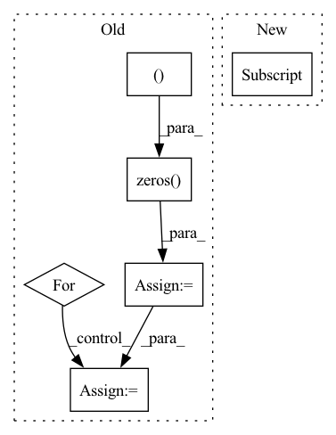

Pattern ID :31806
Before Change
model.eval()
class_num = data_loader.dataset.cls_num
conf_mat = np.zeros( (class_num, class_num ))
loss_sigma = []
path_error = []
for i, data in enumerate(data_loader):
inputs, labels, path_imgs = data
// inputs, labels = data
inputs, labels = inputs.to(device), labels.to(device)
outputs = model(inputs)
loss = loss_f(outputs.cpu(), labels.cpu())
// 统计混淆矩阵
_, predicted = torch.max(outputs.data, 1)
for j in range(len(labels)):
cate_i = labels[j].cpu().numpy()
pre_i = predicted[j].cpu().numpy()
conf_mat[cate_i, pre_i] += 1.
if cate_i != pre_i:
path_error.append((cate_i, pre_i, path_imgs[j])) // 记录错误样本的信息
After Change
loss_mean = 0
acc_batch_list = []
for i, data in enumerate(data_loader):
inputs, labels = data["image"], data["label"]
inputs, labels = inputs.to(device), labels.to(device)
outputs = model(inputs)
loss = loss_f(outputs.cpu(), labels.cpu())In pattern: SUPERPATTERN
Frequency: 3
Non-data size: 6
Instances Fragment ID: 92849034
Project Name: liaorongfan/deeppersonality
Commit Name: 565a883600a2f9be36416c98383ef54294da8ab1
Time: 2021-05-23
Author: 15670381505@163.com
File Name: dpcv/engine/portrait_model_trainer.py
M Class Name: ModelTrainer
N Class Name: ModelTrainer
M Method Name: valid(4)
N Method Name: valid(4)
M Parent Class: object
N Parent Class: object
M File Name: dpcv/engine/portrait_model_trainer.py
N File Name: dpcv/engine/portrait_model_trainer.py
M Start Line: 60
M End Line: 87
N Start Line: 54
N End Line: 71
Before Change
weight_tensor = weight_tensor.transpose(0, dim).contiguous()
filters_count = weight_tensor.size(0)
weight_vec = weight_tensor.view(filters_count, -1)
similar_matrix = torch.zeros( (filters_count, filters_count ))
pdist_fn = torch.nn.PairwiseDistance(p=2)
for i in range(filters_count):
for j in range(i, filters_count):
similar_matrix[i, j] = pdist_fn(weight_vec[None, i], weight_vec[None, j])[0].item()
similar_matrix[j, i] = similar_matrix[i, j]
similar_sum = similar_matrix.sum(axis=0).to(weight_tensor.device)
return similar_sum
After Change
weight_tensor = weight_tensor.transpose(0, dim).contiguous()
filters_count = weight_tensor.size(0)
weight_vec = weight_tensor.view(filters_count, -1)
similarity_matrix = torch.cdist(weight_vec[None, :] , weight_vec[None, :], p=2.0)
return similarity_matrix.squeeze().sum(axis=0).to(weight_tensor.device)
Fragment ID: 92849066
Project Name: openvinotoolkit/nncf
Commit Name: ffadc88c969c173476e6f6b0a404bd1ef30c9080
Time: 2021-03-22
Author: ivan.lazarevich@intel.com
File Name: nncf/pruning/filter_pruning/functions.py
M Class Name: AnonimousClass
N Class Name: AnonimousClass
M Method Name: geometric_median_filter_norm(2)
N Method Name: geometric_median_filter_norm(2)
M Parent Class:
N Parent Class:
M File Name: nncf/pruning/filter_pruning/functions.py
N File Name: nncf/pruning/filter_pruning/functions.py
M Start Line: 45
M End Line: 54
N Start Line: 46
N End Line: 48
Before Change
model.eval()
class_num = data_loader.dataset.cls_num
conf_mat = np.zeros( (class_num, class_num ))
loss_sigma = []
path_error = []
for i, data in enumerate(data_loader):
inputs, labels, path_imgs = data
// inputs, labels = data
inputs, labels = inputs.to(device), labels.to(device)
outputs = model(inputs)
loss = loss_f(outputs.cpu(), labels.cpu())
// 统计混淆矩阵
_, predicted = torch.max(outputs.data, 1)
for j in range(len(labels)):
cate_i = labels[j].cpu().numpy()
pre_i = predicted[j].cpu().numpy()
conf_mat[cate_i, pre_i] += 1.
if cate_i != pre_i:
path_error.append((cate_i, pre_i, path_imgs[j])) // 记录错误样本的信息
After Change
loss_mean = 0
acc_batch_list = []
for i, data in enumerate(data_loader):
inputs, labels = data["image"] , data["label"]
inputs, labels = inputs.to(device), labels.to(device)
outputs = model(inputs) Fragment ID: 92848970
Project Name: liaorongfan/deeppersonality
Commit Name: 565a883600a2f9be36416c98383ef54294da8ab1
Time: 2021-05-23
Author: 15670381505@163.com
File Name: dpcv/engine/portrait_model_trainer.py
M Class Name: ModelTrainer
N Class Name: ModelTrainer
M Method Name: valid(4)
N Method Name: valid(4)
M Parent Class: object
N Parent Class: object
M File Name: dpcv/engine/portrait_model_trainer.py
N File Name: dpcv/engine/portrait_model_trainer.py
M Start Line: 60
M End Line: 87
N Start Line: 54
N End Line: 71
Before Change
// sadly, this is faster
x = np.zeros( (bs, cin, OY, OX ), dtype=tx.dtype)
tx = tx.reshape(bs, oy, ox, cin, H, W)
for Y in range(oy):
for X in range(ox):
x[:, :, Y:Y+H, X:X+W] += tx[:, Y, X]
return x.reshape(bs, cin, OY, OX)
After Change
ridx = swizzle_col2im_index(oy, ox, cin, H, W)
// -1 has to be 0s
x = np.pad(tx.reshape(bs, -1), ((0,0),(0,1)))[:, ridx] .sum(axis=2)
// col2im is just im2col in reverse, but np.add.at is SLOW Fragment ID: 92849024
Project Name: geohot/tinygrad
Commit Name: ef24aac09e0b1bd430c138b2c57ede6528facc11
Time: 2020-10-25
Author: geohot@gmail.com
File Name: tinygrad/utils.py
M Class Name: AnonimousClass
N Class Name: AnonimousClass
M Method Name: col2im(5)
N Method Name: col2im(5)
M Parent Class:
N Parent Class:
M File Name: tinygrad/utils.py
N File Name: tinygrad/utils.py
M Start Line: 64
M End Line: 81
N Start Line: 75
N End Line: 80